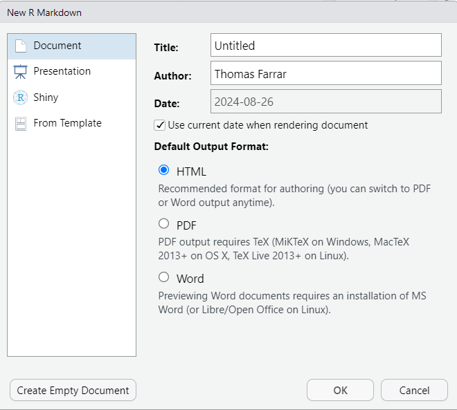
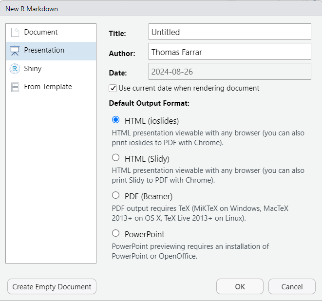
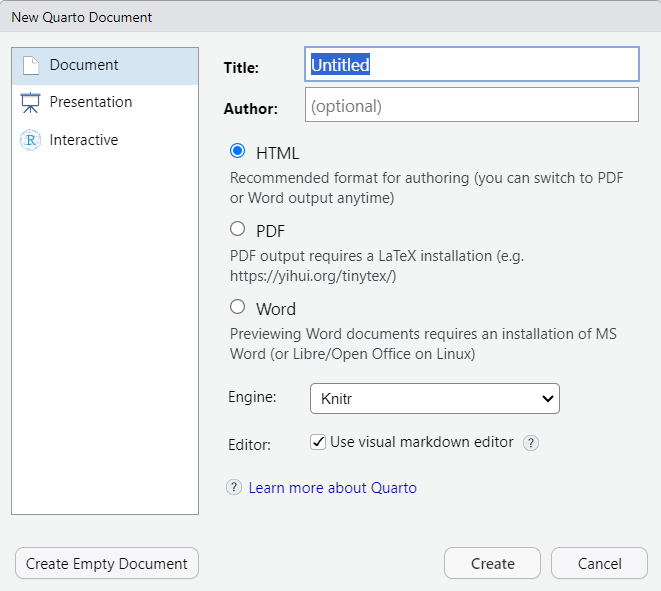
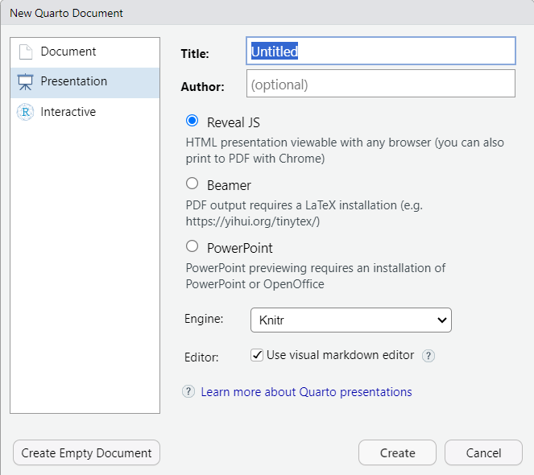
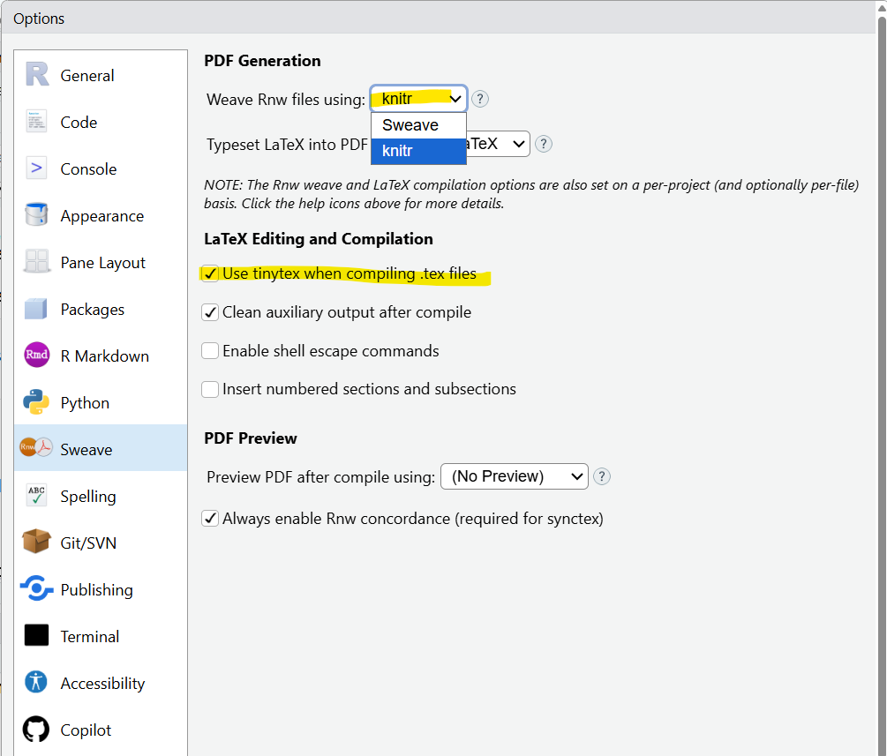
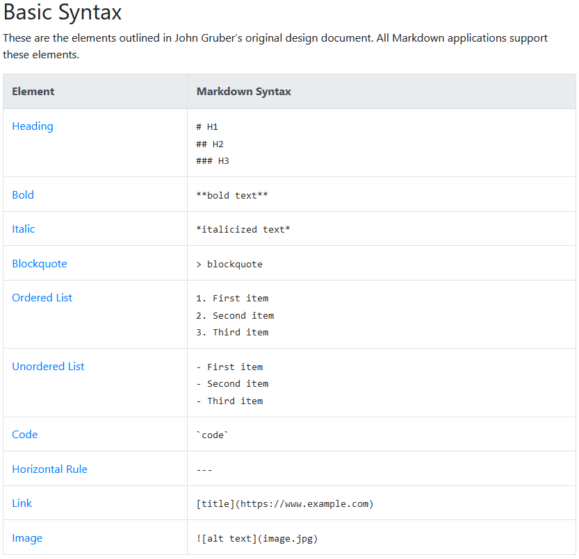

# Install useful R packages
install.packages(c("knitr", "tidyverse", "exams", "english", "rmarkdown",
"rJava", "rjson", "readxl", "kableExtra", "MASS",
"pracma", "tinytex", "berryFunctions", "rstudioapi",
"devtools", "mapdeck", "tth"),
dependencies = TRUE)
# rJython (available from CRAN archive)
install.packages("https://cran.r-project.org/src/contrib/Archive/rJython/rJython_0.0-4.tar.gz")
# rSymPy (no longer available on CRAN)
devtools::install_github("FedericoComoglio/rSymPy")
# Install tinytex from tinytex R package
tinytex::install_tinytex()Automated setting of statistics assessments using R
Thomas Farrar
Cape Peninsula University of Technology
Programme for the Day
Audience Background
Software Setup
Installation of R Software, IDE, and Packages
- Install R
- Install RStudio Desktop or create a Posit Cloud account
- Install the following R packages:
Old-Fashioned Workflow
- Suppose you want to create a statistics assessment
- How would you go about it?
- Maybe…
- Find (or generate) a dataset and do some analysis in R
- Type out the question paper in MS Word
- Make a copy of the question paper to serve as the memorandum
- Copy-and-paste plots and output from R into the memo
- Type interpretations and other answers in memo in MS Word
Problems with Old-Fashioned Workflow
- Suppose you are almost done setting the assessment
- You realise your analysis contains a mistake (or something else not ideal)
- You must redo the analysis in R and re-copy everything into Word
- Suppose you decide to change a question, or marks allocation
- You have to change it manually in both documents (question paper and memo)
- Even if you are using LaTeX, much of the same applies
R Markdown, Quarto, and Sweave
Introducing R Markdown, Quarto, and Sweave
- R Markdown, Quarto, and Sweave are systems in which one can combine code, rich text, and other content in a single source file
- E.g., R code
- When you ‘render’ (compile) the source file, the code runs first
- Then an output document is created (e.g., PDF, HTML, MS Word, MS PowerPoint)
- Thus, values and output created from the code can be used in the document
- For assessment purposes, we are normally interested in PDF output
Benefits of Using R Markdown, Sweave, Quarto
- With one click you run your data analysis and generate your question paper and memorandum
- If you realise you made a mistake and want to change something, no copying and pasting required
- Just fix the mistake and render again
- All graphs, output, etc. will be updated instantly
- By including conditionally executed content in the source file, we can generate the question paper and memo from the same source file with one click
R Markdown (.Rmd)
- A file format designed for creating dynamic documents that combine code, text, and output in a single file
- Can include code chunks in R or Python
- Works within RStudio or Posit Cloud
- Allows document output in PDF, HTML, or MS Word format
- Allows presentation slide output in PDF, HTML, or MS PowerPoint format
- Online books: R Markdown: The Definitive Guide or The R Markdown Cookbook
Quarto (.qmd)
- Newer than R Markdown and considered superior by many
- The syntax is pretty similar to R Markdown
- Bills itself as ‘An open-source scientific and technical publishing system’
- Has a WYSIWYG interface where you can preview output before rendering the file
- Supports more languages than R Markdown
- These slides were created in Quarto
Sweave (.Rnw)
- An older tool compared to R Markdown and Quarto
- Designed for embedding R code within LaTeX documents
- Hence, knowledge of LaTeX programming is needed to use it
- Ideal for loyal LaTeX ‘purists’
- I used it to write my doctoral thesis
Compatibility with R-exams Package
- The
examspackage in R (to be explored this afternoon) is compatible with assessment questions created as .Rmd or .Rnw - Not Quarto
Creating an R Markdown file
- In RStudio or Posit Cloud, go to File, New File, R Markdown…

Creating an R Markdown file

Creating a Quarto file
- In RStudio or Posit Cloud, go to File, New File, Quarto Document or Quarto Presentation

Creating a Quarto file
- In RStudio or Posit Cloud, go to File, New File, Quarto Document or Quarto Presentation

Creating a Sweave File
- In RStudio or Posit Cloud, go to File, New File, R Sweave
- You’ll get what looks like a blank .tex file, but with extension .Rnw
Creating a Sweave File
- Recommended: go to Tools, Global Options, Sweave, and change settings:
- Weave Rnw files using
knitr - Tick ‘Use tinytex when compiling .tex files’
- Note: if weaving using
knitr, don’t use Sweave chunk options
- Weave Rnw files using

Basic Markdown Syntax

Code Chunks: R Markdown and Quarto
- The ‘three backtick’ syntax is common to R Markdown and Quarto
- Labeling the chunk is optional
- Makes debugging easier
- Chunk labels cannot be duplicated
Chunk Languages: R Markdown and Quarto
rin the chunk header denotes the language of the chunk; many others are supported (e.g.,python,sql)- SAS chunks are supported via the
SASmarkdownR package- See documentation
- Requires SAS to be installed on your machine
Code Chunks: Sweave
- One does not specify the language
rin the chunk header, because Sweave only supports R chunks - One can use
knitrpackage rather than classic Sweave to weave .Rnw files (see here)
Chunk Options: R Markdown and Quarto
- Chunk options can be set globally, using
knitr::opts_chunk$set() - They can also be set for an individual chunk, in two ways:
- Option 1:
- Option 2:Available Chunk Options: R Markdown
| Option | Description |
|---|---|
| eval | Evaluate the code chunk |
| echo | Include source code in output |
| include | Include source code and/or chunk output in output |
| results | How to display text results |
| warning | Include R warnings in output |
| message | Include R messages in output |
- There are also many chunk options for controlling the appearance of figures
- Full list on Yihui Xie’s website
Available Chunk Options: Quarto
| Option | Description |
|---|---|
| eval | Evaluate the code chunk |
| echo | Include source code in output |
| include | Include source code and/or chunk output in output |
| output | Include the results of executing the code in the output (true, false, or asis to indicate that the output should be treated as raw markdown) |
| warning | Include R warnings in output |
| message | Include R messages in output |
Sweave Chunk Options
- Similar to R Markdown, but with different values of the
resultsoption:
| R Markdown | Sweave | Description |
|---|---|---|
| ‘markup’ | ‘tex’ | Render as marked-up text or LaTeX code, according to the output format |
| ‘asis’ | ‘verbatim’ | Display in the output file verbatim without any special formatting |
| ‘hide’ | ‘hide’ | Suppress display of results from output file |
| ‘hold’ | All text output is collected and placed after all the source code within the chunk |
- See Sweave user manual (updated Nov 2025)
R Code Chunks: Example (Code Only)
- How the chunk appears in the
.qmdor .Rmd source file vs. in the output
R Code Chunks: Example (Display Code and Output)
R Code Chunks: Example (Display Output Only)
```{r surf4cars2, echo=FALSE, eval=TRUE, include=TRUE}
corolla %>%
group_by(TransmissionType) %>%
summarise(MeanPrice = mean(AskingPrice))
```# A tibble: 2 × 2
TransmissionType MeanPrice
<chr> <dbl>
1 Automatic 280559.
2 Manual 264062 R Code Chunks: Example (Display Code Only; Don’t Run)
R Code Chunks: Example (Run Code but Display Nothing)
Including Code and Output Outside Chunks
- We can put text in code (verbatim) font style by putting the text within a single set of backticks
- We can run code outside of a chunk by putting the text within a single set of backticks with the letter
rat the start
Including Code and Output Outside Chunks: Example
```{r surf4cars5, echo=TRUE, eval=TRUE, include=FALSE}
corolla %>%
group_by(TransmissionType) %>%
summarise(MeanPrice = mean(AskingPrice)) %>%
filter(TransmissionType == "Automatic") -> myoutput
mymean <- myoutput$MeanPrice[1]
library(priceR)
```- The mean price of a Toyota Corolla with automatic transmission is
`r format_currency(mymean, "R") %>% str_replace(",", " ")`.- The mean price of a Toyota Corolla with automatic transmission is R280 559.
Including Plots in the Output
- Provided that
evalandincludeare set toTRUE, plots created by the code will be included in the output file - We can use other chunk options such as
out.heightandout.widthto resize the plot if desired
```{r, echo=FALSE}
corolla %>%
group_by(TransmissionType) %>%
summarise(MeanPrice = mean(AskingPrice)) %>%
ggplot(mapping = aes(x = TransmissionType, y = MeanPrice)) +
geom_col(fill = "cyan") +
labs(x = "Transmission Type", y = "Mean Price",
title = "Toyota Corolla Transmission Type vs. Mean Price",
caption = "Source: surf4cars.co.za")
```Including Plots in the Output

Including Mathematical Formulas
- One can easily include mathematical formulas in R Markdown or Quarto reports using basic LaTeX syntax
- The equation of the simple linear regression model is
${y_i = \beta_0 + \beta_1 x_{i} + \epsilon_i}$- The equation of the linear regression model is \({y_i = \beta_0 + \beta_1 x_{i} + \epsilon_i}\)
- This is even more seamless in Sweave since the whole source file is structured like a .tex file
R Markdown and Quarto Headers
- YAML headers containing metadata for the output file (title, author, date, etc.) are placed between two sets of
--- - Some of these are automatically generated using the dialog box we saw above
- The syntax is slightly different for R Markdown vs. Quarto (e.g.,
outputvs.format) - Below is an example from a Quarto file
---
title: "Generating Reports Using Quarto"
format:
revealjs:
default
beamer:
default
execute:
echo: true
warning: false
message: false
monofont: "Courier New"
monofontoptions: "Scale=0.5"
urlcolor: blue
---R Markdown and Quarto Headers
- When outputting an R Markdown or Quarto file to PDF, one can use the YAML header to include a .tex file that is prepended to the .tex file generated during compilation
- This is a useful way to load LaTeX packages or control other LaTeX settings
- See the following example from an R Markdown YAML header:
Setting an Assessment Template in R Markdown or Sweave
R Markdown Source File
- We will now explore how to create an R Markdown source file for your assessment
- Two templates are provided on the workshop Github page
- Each template has the following features:
- Includes a .tex preamble file with some useful R packages and document settings
- Uses parameters from an external script that automatically populate information such as assessment name and number, subject name and code, qualification name and code, examiner name, moderator name, assessment date and time
- Automatically calculates and prints total marks per question and for the whole assessment
- Uses conditional logic to include only content that should be included for the question paper and memo, respectively
- Uses a special symbol (red square) to denote wherever a mark is awarded in the memo
- The template contains a few ‘dummy questions’ for illustration purposes
Exploring the Templates
- We will now spend some time exploring the templates to understand their structure and content
- We will start with the output files and then look at the source code
- After that, we will look at the R script that will set the assessment parameters and compile the source file to create the question paper and memorandum
Example 1: ABC260S Test 1
- Let’s exit the presentation and explore our first example
- It consists of:
- A few miscellaneous multiple choice questions
- A basic descriptive statistics question
- A basic mathematical statistics question
- A basic R coding question
- The source file is
ABC260S_Test_1_2025.Rmd - The output files are
ABC260S_Test_1_2025_QP.pdf(question paper) andABC260S_Test_1_2025_Memo.pdf(memorandum)
Sweave Source File
- A .Rnw source file is also provided for those who prefer this format
- The source file is
ABC260S_Test_1_2025.Rnw - And, for the second example discussed below,
ABC260S_Test_2_2025.Rnw - The chunk options use
knitrsyntax (meaning they will only work if the files are weaved usingknitrrather than Sweave)
Setting and compiling an assessment generating script in R
Compiler R Script: R Markdown
- The R script template
assessment_compiler_Rmd.Rcontains code to do the following:
- Load required R packages
- Set values of assessment parameters (subject code, assessment date, etc.)
- Compile the .Rmd source file twice (once for question paper, once for memo)
- Note: if using .Rnw source files, rather use the
assessment_compiler_Rnw.Rscript template - Let us have a look at the template
Example 2: ABC260S Test 2
- The output files appear almost identical to those of Example 1
- However, the level of automation in the source .Rmd file is higher:
- Randomisation is incorporated into the setting of the questions
- Solutions are automatically calculated with steps
- The source file is
ABC260S_Test_2_2025.Rmd(orRnwversion) - The output files are
ABC260S_Test_2_2025_QP.pdf(question paper) andABC260S_Test_2_2025_Memo.pdf(memorandum)
Example 2
- We can use basic randomisation functions in R to introduce some randomisation into multiple choice questions
- Statistics answers are easy to auto-calculate due to the many built-in statistics functions in R
- Auto-calculating mathematics answers is a bit trickier but Python’s SymPy symbolic mathematics library can help us
- It is available to R users through the
RSymPyR package
Auto-Generated, Randomised LMS Assessments Using R-exams
Aims for the Afternoon
- Pivot from paper-based assessments to online assessments deployed in an LMS
- Learn the syntax required to use the
examspackage in R - Learn how to set online assessments that include the features covered earlier (e.g., multiple random versions; automated generation of memo)
- Explore how students experience the assessment (and feedback) in an LMS
Motivation
- Most LMSs allow users to set many different types of question (e.g., multiple choice; numerical answer; essay)
- Some LMSs also allow users to create a ‘pool’ or ‘bank’ containing multiple versions of a question, with one question randomly drawn from the pool each time a student does an assessment
- The problem is that it is very time-consuming to design questions within the LMS interface (especially if we want to create many different versions of the question)
- What if this could all be automated?
Some Demos
- Here are three screencast videos showing aspects of assessments I’ve deployed to Blackboard from R-exams
Statistical Quality Control Online Assessment
R Coding Online Assessment
Mathematical Statistics Online Assessment
The exams R Package
- Originally developed for auto-generation of paper-based exams (Grün and Zeileis 2009)
- Subsequently adapted for auto-generation of e-learning exams (Zeileis, Umlauf, and Leisch 2014)
- Has a dedicated website, r-exams.org
- Has an active community support forum at R-Forge
- Stable package version available on CRAN
- Development version available via
install.packages("exams", repos="http://R-Forge.R-project.org")
Workflow to Create an LMS Assessment Using R-exams
- Create exercise (question) files using R Markdown or Sweave
- Compile exercise files into an assessment using
exams2htmlfor preview purposes - Compile exercise files into a zip for export to LMS using
exams2xyzfunction (e.g.,exams2blackboard,exams2moodle,exams2canvas,exams2sakai::exams2sakai) - Import the zip into the LMS
- Deploy the exercises into an LMS test and adjust settings
Creating Exercise Files
- The R
examspackage comes with a lot of ready-made examples in both R Markdown (.Rmd) and Sweave (.Rnw) formats - To find them, run
.libPaths()in R - Navigate to the folder that is listed
- Open the
examsfolder and theexercisessubfolder - You will find many .Rmd and .Rnw files
- Most of the examples are statistics questions
Structure of Exercise Files
- The exercise .Rmd or .Rnw file is like those we saw this morning
- However, along with code chunks, it contains three sections:
- Question: content the student will be shown when they take the test
- Solution: content the student could (if you wish) be shown as feedback after taking the test
- Meta-information: question settings for LMS
Multiple Choice Question (MCQ) Exercises
- Most LMSs allow single-choice and multi-choice MCQ
- Let’s consider a homemade example of each:
- Single-choice:
capital_cities.Rmdorcapital_cities.Rnw - Multi-choice:
two_numbers.Rmdortwo_numbers.Rnw
- Single-choice:
Numerical Answer Exercises
- Like MCQ, auto-marking
- Marking is all-or-nothing based on whether entered answer is within a specified tolerance of the correct answer
- Example 1:
calculate_gradient.Rmdorcalculate_gradient.Rnw - Example 2:
calculate_lotto.Rmdorcalculate_lotto.Rnw
- Example 1:
Essay (or File Upload) Exercises
- Great when you want the student to write a paragraph
- Or submit code
- Or upload a plot
- Or upload a photo of handwritten work (e.g., derivation)
- Downside: not auto-marking
- May not be supported in all LMSs
Essay Exercises: Examples
- Example 1:
upload_scatterplot.Rmdorupload_scatterplot.Rnw- Example 2:
upload_expectation.Rmdorupload_expectation.Rnw - When generating LaTeX code in R character variables in the exercise templates, be aware that an extra backslash is required in Rnw files compared to Rmd files
- Example 2:
Tips for Exercise Files
- Do not set seed in the template; rather set it in the main R script
- Otherwise all random versions of exercise will be the same!
- Use
include_supplementR function if you want to include a file from your PC in the question (e.g., a data file) - Use very basic LaTeX: no packages (may not be supported by LMSs)
- Use
eqnarrayenvironments for multi-line equations
- Use
Creating the R script to generate the test
- Combine the exercise files (.Rnw or .Rmd) in a list object
- Set the parameter for how many versions of the test you want to generate
- Set the pseudorandom number generator seed (
set.seed) - Run
exams2htmlfirst to preview your questions in your browser- This is not a guarantee that they will look the same in the LMS
- Run
exams2xyzto generate a zip file that can be imported into LMS - Example:
generate_test_Rmd.Rorgenerate_test_Rnw.R
Importing Zip File into LMS
- Instructions will vary by LMS
- Check that settings from exercise metadata have pulled through to LMS
- Always test out the test in the LMS before deploying to students (e.g., in Student Preview mode)
- Or, deploy a practice test (with different seed) and let students be your code testers
References
Grün, Bettina, and Achim Zeileis. 2009. “Automatic Generation of Exams in R.” Journal of Statistical Software 29 (10): 1–14. https://doi.org/10.18637/jss.v029.i10.
Zeileis, Achim, Nikolaus Umlauf, and Friedrich Leisch. 2014. “Flexible Generation of e-Learning Exams in R: Moodle Quizzes, OLAT Assessments, and Beyond.” Journal of Statistical Software 58 (1): 1–36. https://doi.org/10.18637/jss.v058.i01.